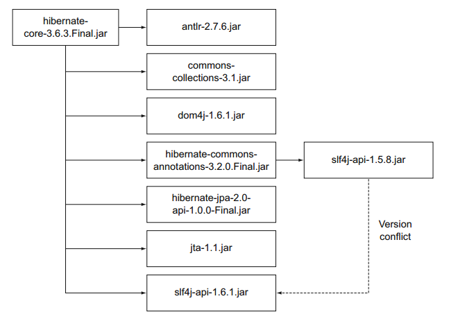

简要概述依赖管理
几乎所有基于JVM的项目都会或多或少依赖其他库，假设你在开发一个基于web的项目，你很可能会依赖很受欢迎的开源框架比如Spring MVC来提高效率。Java的第三方库一般以JAR文件的形式存在，一般用库名加版本号来标识。随着开发的进行依赖的第三方库增多小的项目变的越来越大，组织和管理你的JAR文件就很关键。
不算完美的依赖管理技术
由于Java语言并没提供依赖管理的工具，所以你的团队需要自己开发一套存储和检索依赖的想法。你可能会采取以下几种常见的方法：
- 手动复制JAR文件到目标机器，这是最原始的很容易出错的方法。
- 使用一个共享的存储介质来存储JAR文件(比如共享的网盘)，你可以加载网络硬盘或者通过FTP检索二进制文件。这种方法需要开发者事先建立好与仓库的连接，手动添加新的依赖到仓库中。
- 把依赖的JAR文件同源代码都添加到版本控制系统中。这种方法不需要任何额外的步骤，你的同伴在拷贝仓库的时候就能检索依赖的改变。另一方面，这些JAR文件占用了不必要的空间，当你的项目存在相互之间依赖的时候你需要频繁的check-in的检查源代码是否发生了改变。
自动管理依赖的重要性
尽管上面的方法都能用，但是这距离理想的解决方案差远了，因为他们没有提供一个标准化的方法来命名和管理JAR文件。至少你得需要开发库的准确版本和它依赖的库(传递依赖)，这个为什么这么重要？
准确知道依赖的版本
如果在项目中你没有准确声明依赖的版本这将会是一个噩梦，如果没有文档你根本无法知道这个库支持哪些特性，是否升级一个库到新的版本就变成了一个猜谜游戏因为你不知道你的当前版本。
管理传递依赖
在项目的早期开发阶段传递依赖就会是一个隐患，这些库是第一层的依赖需要的，比如一个比较常见的开发方案是将Spring和Hibernate结合起来这会引入超过20个其他的开发库，一个库需要很多其他库来正常工作。下图展示了Hibernate核心库的依赖图：

如果没有正确的管理依赖，你可以会遇到没想到过的编译期错误和运行期类加载问题。我们可以总结到我们需要一个更好的方式来管理依赖，一般来讲你想在项目元数据中声明你的依赖和它的版本号。作为一个项目自动化的过程，这个版本的库会自动从中央仓库下载、安装到你的项目中，我们来看几个现有的开源解决方案。
使用自动化的依赖管理
在Java领域里支持声明的自动依赖管理的有两个项目：Apache Ivy(Ant项目用的比较多的依赖管理器)和Maven(在构建框架中包含一个依赖管理器)，我不再详细介绍这两个的细节而是解释自动依赖管理的概念和机制。
Ivy和Maven是通过XML描述文件来表达依赖配置，配置包含两部分：依赖的标识加版本号和中央仓库的位置(可以是一个HTTP链接)，依赖管理器根据这个信息自动定位到需要下载的仓库然后下载到你的机器中。库可以定义传递依赖，依赖管理器足够聪明分析这个信息然后解析下载传递依赖。如果出现了依赖冲突比如上面的Hibernate core的例子，依赖管理器会试着解决。库一旦被下载就会存储在本地的缓存中，构建系统先检查本地缓存中是否存在需要的库然后再从远程仓库中下载。下图显示了依赖管理的关键元素：
Gradle通过DSL来描述依赖配置，实现了上面描述的架构。
自动依赖管理面临的挑战
虽然依赖管理器简化了手工的操作，但有时也会遇到问题。你会发现你的依赖图中会依赖同个库的不同版本，使用日志框架经常会遇到这个问题，依赖管理器基于一个特定的解决方案只选择其中一个版本来避免版本冲突。如果你想知道某个库引入了什么版本的传递依赖，Gradle提供了一个非常有用的依赖报告来回答这个问题。下一节我会通过一个例子来讲解。